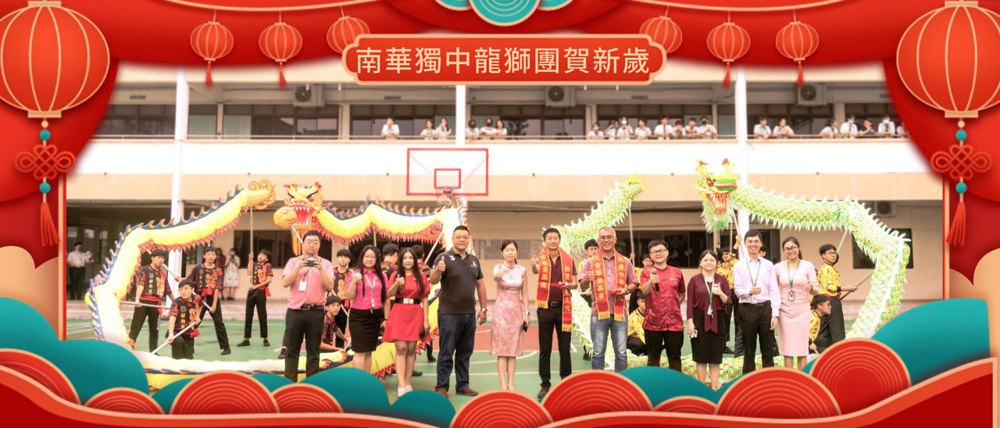
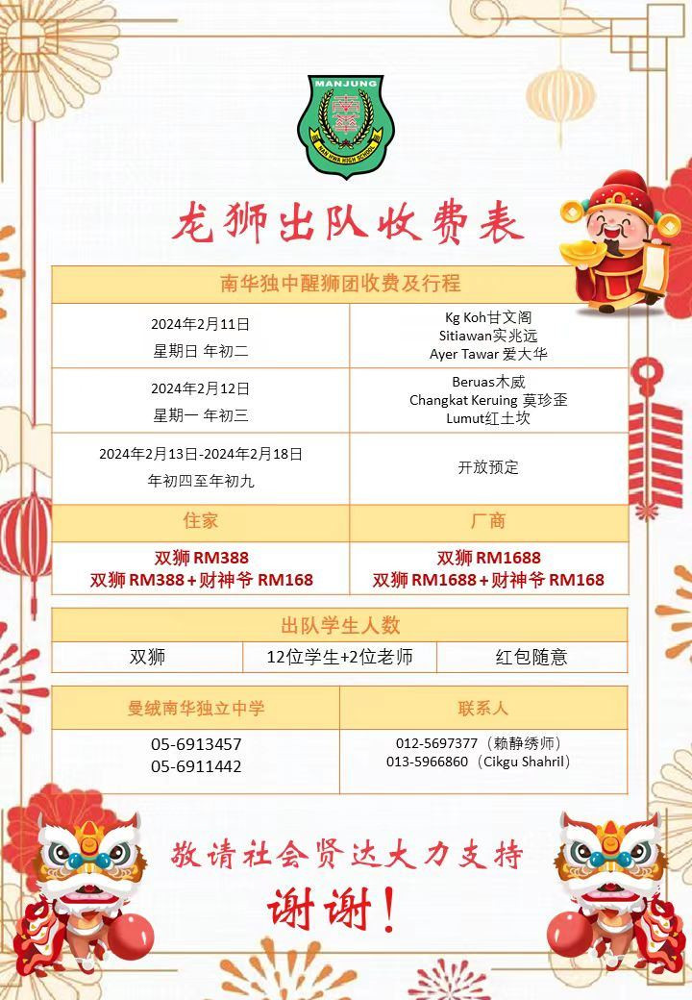
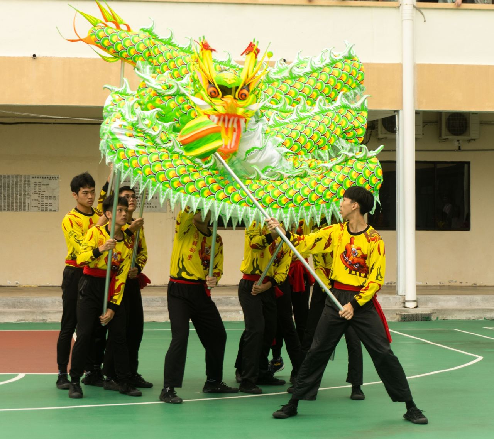
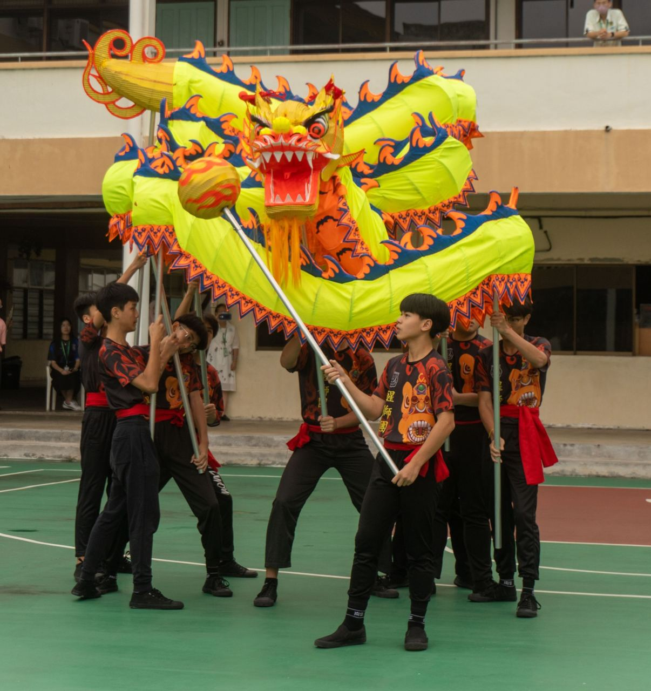
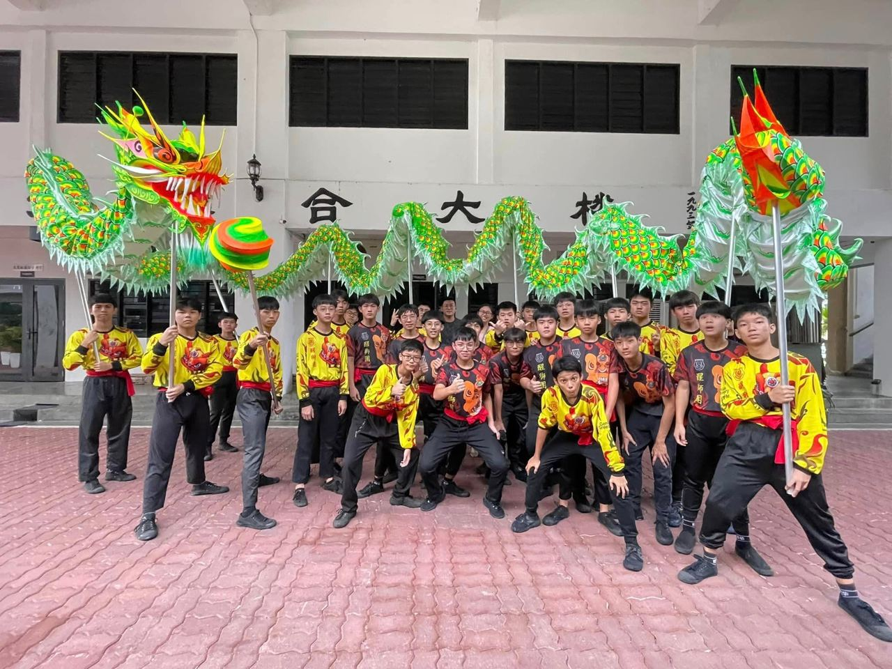

南华独中龙狮团贺新岁
南华独中龙狮团贺新岁
新添舞龙现今开放预订
赤兔追风千里志
金龙拱日万家春
有别于往年，南华独中龙狮团将会以绕花园的形式进行住家的采青贺岁，日期与地点如下：
【年初二】
实兆远、甘文阁与爱大华等区
【年初三】
木威、莫珍歪与红土坎等区
收费与往年相同，一律为388令吉，收入皆纳入为学校筹募发展基金。
年初四（2024年2月13日）至元宵节（2024年2月24日）期间将采用预订制，有意预订的民众请尽早下订。
另外，本校于2023年添购了舞龙，成立了龙狮团。现今起开始接收来临农历新年的订单，欢迎有需要的商家或民众，直接拨电预约。
有意邀约预订的商家或个人，可致电曼绒南华独中05-6913457丶05-6911442 , 联课副主任赖老师（012-5697377）或龙狮团负责老师（013-5966860）询问。
#龙狮团 #新年采青 #醒狮 #舞龙
#南华独中 #曼绒 #实兆远





